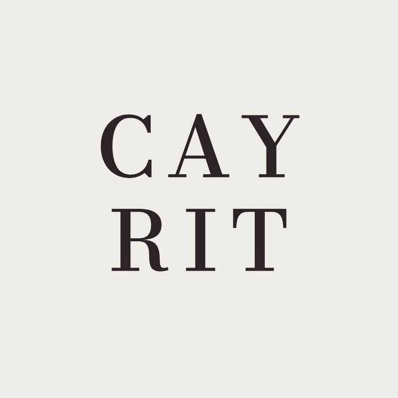

The house
It began at a kitchen table, with a saucepan and a coconut shell.
Before there was a brand, there was a ritual.
Before there was a brand, there was a ritual: pouring wax into shells cleaned by hand, for the people around the table. The island was in every one of them — the salt, the thatch, the rock.
Cayman Rituals is that habit, held to a higher standard. Made slowly, in small numbers, from the only place on earth these layers exist.

Cayman Rituals · Cayman Islands